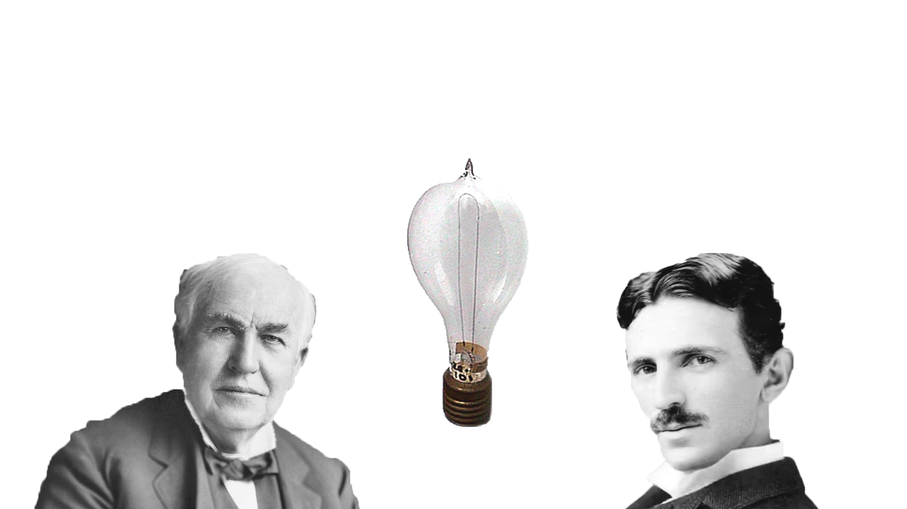
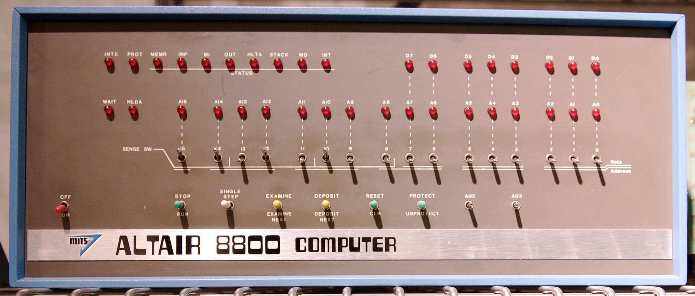
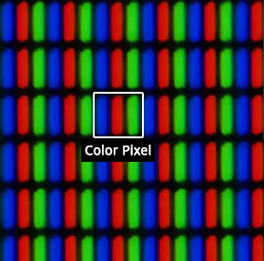

The lightbulb
A great starting point in conceptualizing binary, the launage of computers. The use of electricty commercially began with
the advent of electrical lighting. A series of lightbulbs is also a great way of visualizing binary.
They can be thought of as a basic unit that can turn ON and OFF using electrical current.....

(Lightbulb Photoshop)
Early Light Art
Before true pixel art, colored light bulbs could be seen decorating advertisment signs.
 (Adverstisment sign for the Lodge company 1940)
(Adverstisment sign for the Lodge company 1940)
The First Computer Monitors
Rows of lightbulbs were used to monitor some of the earliest computer systems.

(Altair 8800 microcomputer front panel, Todd Dailey)
Liquid Crystal
Liquid crystal displays (LCD) were an inovation from earlier cathode ray tubes used in television. They were the first true color, pixel display.

(An LCD under a magnifying glass, bigshotcamera.com)
 RETURN TO MAIN PAGE ABOVE
RETURN TO MAIN PAGE ABOVE